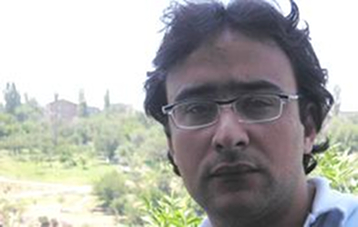

ПРОБЛЕМЫ СМИ В СОВРЕМЕННОМ АЗЕРБАЙДЖАНЕ
Доклад представлен на встрече
со студентами в университете
имени Грачьи Ачаряна
О взаимоотношениях «пресса - политическая власть» и «пресса – общество» в Азербайджане, можно сказать следующее: в первом случае существует полная зависимость, во втором же полное игнорирование. То, что азербайджанское общество относится к печати потребительски, есть неоспоримый факт. Сегодня, как и во времена СССР, пресса в Азербайджане остается послушным инструментом в руках тех или иных политических и экономических групп, и, прежде всего – инструментом в руках власти.
С сожалением приходится признать, что в Азербайджане сегодня практически нет печатного или электронного издания, которое передавало бы полную и сбалансированную информацию о происходящих событиях, не было бы ничьим рупором, и позволяло бы самому обществу давать оценку тем или иным событиям. Нет такого органа СМИ, в котором различные формы прямого или скрытого политического давления были бы нейтрализованы настолько, чтобы этот орган мог выполнять функцию «общественного контролера».
В первую очередь, для отечественных СМИ остро стоит проблема бедности и ограниченности самофинансирования. Как ни парадоксально, с финансовой точки зрения, период конца 1980-х – начала 1990-х годов был наиболее благополучным для прессы Азербайджана. Тогда еще не сложился настоящий рекламный рынок, не было ни богатых политических партий, ни состоятельных бизнесменов. Но газеты могли жить только за счет продажи, и даже получали небольшую прибыль. Люди не уставали читать прессу, им нравилось, что они могут прочитать о том, о чем раньше писать запрещалось. Все испытывали неизведанное ранее упоение от свободы слова. Выпуск газет становился выгодным бизнесом. В принципе, то же самое можно отнести к любой союзной республике, начала девяностых.
В Азербайджане ситуация начала меняться, начиная с 1993 года. Сначала были введены чрезвычайное положение, военная и политическая цензура. Затем в 1994-95 гг. возникли бумажный кризис и хронические проблемы с типографиями. Цены на бумагу подскочили в 4-5 раз, альтернативных типографий не было, приходилось обращаться к единственно функционировавшей государственной (правительственной) типографии, а она, будучи монополистом, устанавливала «бешеные расценки». Издание независимых газет стало делом мучительно трудным, требовавшим преодоления множества препятствий. Независимые газеты, вкусившие вкус свободы, и только-только обретавшие подлинный профессионализм, разом обанкротились. Одни из издателей в поисках выхода ринулись в коридоры власти, другие стали лихорадочно искать богатых покровителей, которым для личных целей нужна была конъюнктурная газета, третьи просто сменили профессию. Очень короткий период «свободной – независимой - демократической» печати в Азербайджане подошел к концу. Закончился этот период и для более или менее независимых электронных СМИ; раньше или позже были закрыты телевизионные каналы BMTI, SARA, АВА.
В преддверии президентских выборов 1998 г., положение внешне вроде бы изменилось. Именно в этом году, официальная цензура была отменена в Азербайджане. В газетах не стало «белых пятен» из-за снятых по требованию цензоров материалов, откровенных препятствий в распространении и продаже газет стало меньше. К 2000 году смягчились проблемы с регистрацией новых газет. Но – увы! – взамен появились другие, более изощренные методы воздействия на прессу. Чиновники и прочие власть имущие буквально завалили суды многочисленными исками против газет по обвинениям в клевете, а суды, как правило, стали подвергать газеты немыслимым штрафам. Типографии, которые осмеливались печатать независимые газеты, под тем или иным предлогом закрывались. Начались гонения на журналистов, участились факты насилия, целые тиражи газет подвергались аресту, редакторы газет обвинялись в том, что занимаются политической деятельностью и их арестовывали по сфабрикованным обвинениям… И вновь был применен испытанный уже прием: сначала долги независимых газет были заморожены, их не принуждали платить огромные штрафы по судебным постановлениям, было принято решение о предоставлении СМИ Азербайджана льготных кредитов. Покойный президент Гейдар Алиев в своей беседе с журналистами даже назвал эти меры «политикой замораживания и более теплых взаимоотношений с прессой».
Правительство до сих пор сохраняет различные формы контроля над СМИ. Основные телеканалы прямо или косвенно контролируются государством. (Не для кого не секрет, что большинство азербайджанских СМИ связаны либо с правительством, либо с теми или иными оппозиционными партиями, и только немногие отдельные издания являются политически не ангажированными. Ведущие позиции на информационном рынке занимают электронные СМИ, которые в подавляющем большинстве имеют проправительственный уклон. Многочисленные неправительственные газеты и журналы, работающие под постоянным давлением со стороны властей, сильно политизированы и не всегда обеспечивают достоверность информации, однако при этом служат открытой площадкой для дискуссий). Местные радиостанции почти не занимаются серьезным информационным вещанием, делая упор на музыкальные и развлекательные программы. Правительство полностью контролирует выдачу лицензий на радио и телевещание через лицензирующий орган, который в полном составе назначается президентом.
Что касается деятельности недавно созданного общественного Совета по печати, то и этот орган так же остается неэффективным в силу того, что как говорилось выше, множество газет и журналов различного профиля, издаваемых в стране, полностью зависимы от политической власти. Что до органов оппозиционных политических партий, то они ангажированы соответствующими политическими силами, и от них также трудно ожидать сбалансированной информации.
Хотя ожидалось, что с созданием Совета по прессе в Азербайджане в СМИ произойдут важные положительные изменения. Это событие многие представители СМИ оценили как новый этап, т.к. у прессы должна была появиться возможность самостоятельно решать существующие проблемы, а не искать их решения в других структурах и сферах. Однако время показало, что не все так просто. Сегодня большинство пишущей братии полагает, что Совет по прессе Азербайджана, является организацией существующей на бумаге, которая создает видимость существования независимой прессы для Совета Европы.
Другая не менее острая проблема в отечественной прессе, это, безусловно, непрофессионализм и закрытость, замкнутость в себе. Каковы бы не были внешние обстоятельства, вопросы профессионализма во всех случаях имманентны, это всегда – вопрос внутренних устремлений. К азербайджанским журналистам это относится в полной мере, хотя причин для оправданий в непрофессионализме они могут привести множество. Так в чем же проявляется непрофессионализм журналистского корпуса? Скажем, в большинстве информационных программ источники информации не уточнены. Что до анонимных источников информации, то для азербайджанской журналистики будто и не существует юридических и моральных аспектов того, когда и в каких пределах можно пользоваться подобными источниками. Не выполняются и требования сбалансированной журналистики; во многих случаях «баланс» создается за счет формального оправдания типа «мнение другой стороны получить не удалось».
В том числе, нередко создается ощущение, что азербайджанская журналистика так и не сумела преодолеть установок советской тоталитарной системы. Это особенно удивительно, поскольку азербайджанская журналистика – в большинстве своем молодая. Но некоторые из этих “молодых” (особенно – журналисты электронных СМИ) кажутся прямыми наследниками печально известного советского прокурора Вышинского. Они с легкостью оперируют такими понятиями как “шпион”, “враг”, будто примеряя мантию “государственных обвинителей”. Причем право противной стороны на выражение собственной точки зрения в расчет не принимается. Так до сих пор предателями были объявлены десятки журналистов и НПО-шников посетивших соседнюю Армению и Нагорный Карабах, который всем мировым сообществом признан неотъемлемой частью Азербайджана.
Многие ведущие СМИ республики не хотят и не могут понять, что журналисты должны, вернее обязаны свободно освещать региональные конфликты, поскольку привлечение общественного внимания к данным проблемам играет существенную роль в осуществлении контроля над нарушениями норм гуманитарного права и прав человека в ситуациях конфликта, в данном случае армяно-азербайджанского. Кстати будет отметить и то, что государственные органы АР, менее всего вмешиваются в деятельность журналистов и НПО-шников посещающих Армению и НК. В принципе, не вмешиваются вообще.
Однако ж, вернемся все-таки к проблемам насущным. Точнее, к финансовым. Ясно как божий день, что для полной независимости прессы требуется твердая экономическая опора. Мировая практика показывает, что до 70% бюджета у СМИ, составляют средства, приобретенные за счет рекламы и других форм помощи, а рекламодателями являются работающие в стране фирмы, предприятия. И, к большому сожалению, по этому поводу что-либо позитивное сказать трудно. За счет рекламы пока еще живут бесплатные рекламные газеты и несколько газет по объявлениям. Серьезная газета не может собрать такую рекламу, которая обеспечивала бы ей безбедное существование.
Вторая составляющая бюджета прессы - это покупательская способность населения. И в этой сфере в Азербайджане, можно сказать, мало чего положительного. Поэтому и пресса, которая не может решить свои финансовые проблемы общепринятым путем, вынуждена приближаться к разным политикам, партиям, финансовым группам и госчиновникам, что создает для развития азербайджанской прессы серьезные проблемы. Ведь все эти «приближения» к власть имущим, обеспечивают СМИ зависимость от спонсоров, и лишают их возможности свободно говорить. Наверное, по мере развития азербайджанского общества прессе также удастся постепенно решать свои проблемы. Конечно, со стороны государства развитию СМИ оказывается определенная помощь, в т.ч. и выданные несколько раз кредиты некоторым газетам. Но этого, конечно же, недостаточно.
Другая, не менее важная проблема для отечественных СМИ, это отношения «журналист-чиновник», которые, мягко говоря, в нашей республике не на должном уровне. Журналист пишет материал, но при этом сталкивается со многими трудностями при попытке получить информацию из первоисточника. Это связано с большим количеством проблем: либо чиновника нет на месте, либо он не может нормально построить работу своей пресс-службы. Что происходит в результате? Не получивший информацию из первоисточника журналист пишет свои статьи, основываясь на слухах, а на следующий день чиновник, о котором написали статью, подает на журналиста в суд или оказывает на него давление в той или иной форме. К сожалению, азербайджанские суды, в зависимости от ранга чиновника, пытаются и выносят необъективные решения в отношении представителей СМИ. В некоторых случаях выбирается мера наказания, намного превышающая степень вины.
Разумеется, при наличии такого объема проблем и нарушений, международные организации в своих отчетах, довольно часто заявляют о том, что негативно оценивают ситуацию со свободой СМИ в Азербайджане. Подобные заключения приняли традиционный характер особенно в последние два года, в течении которых участились давления на прессу, а однажды дело дошло даже до физического устранения нежелательного журналиста. Убийство Эльмара Гусейнова, главного редактора журнала «Монитор» все еще является предметом жарких дискуссий, как в стране, так и в международных институтах.
Следует напомнить, что до убийства Э.Гусейнова, против него неоднократно возбуждались уголовные дела, в его адрес звучали угрозы, применялись судебные санкции, его сажали в тюрьму. Судебные исполнители многократно пытались описать и конфисковать имущество редакции и Эльмара Гусейнова, а также его коллег, требуя оплатить судебные штрафы. Таким образом, этот журналист в течение 8 лет был под постоянным прессингом и давлением. Он мог бы спокойно эмигрировать из страны, тем более что не раз получал предложения от иностранных государств о предоставлении ему политического убежища. Но Эльмар Гусейнов, который отличался от многих коллег, своей принципиальной позицией, остался на Родине. Остался, с тем, чтобы вести борьбу за свободу слова, демократию, плюрализм и… превратиться в мишень.
Убийство Эльмара всколыхнуло всю общественность страны, не остались равнодушными к этому чудовищному преступлению и международные организации, а также представители иностранного дипломатического корпуса, аккредитованные в Азербайджане. Они резко осудили это преступление и обратились к властям Азербайджана с убедительной просьбой сделать все, от них зависящее, чтобы найти преступников и привлечь их к ответственности. Одним из первых, выразивших свое отношение к убийству Эльмара Гусейнова был президент Ильхам Алиев, заявивший, что убийство журналиста в Азербайджане на фоне «прочно установившейся общественно-политической стабильности» является провокацией против властей и посягательством на демократическое развитие Азербайджана. «Те, кто совершил это преступление, стремились нанести ущерб международному имиджу Азербайджана, дискредитировать его в год парламентских выборов, представить страну как нестабильное и недемократическое государство, в котором имеют место теракты, преследуется свобода слова».
Однако, убийством Эльмара, гонения на представителей СМИ не ограничились.
Так, недавно по обвинению в хранении наркотиков был приговорен к трем годам лишения свободы оппозиционный журналист Сакит Захидов. Многие охарактеризовали это дело как политически мотивированное. Далее, в этом году был похищен, изнасилован и жестоко избит главный редактор газеты «Бизим Йол» («Наш Путь») Бахеддин Хазиев, который несколько дней находился в состоянии комы.
Учредитель и главный редактор двух самых популярных печатных изданий Азербайджана Эйнулла Фатуллаев решил закрыть свои газеты - еженедельный «Реальный Азербайджан» и ежедневный «Гюнделик Азербайджан» - и уйти из журналистики. Объявление об этом он сделал после того, как Бакинский суд приговорил его к условному заключению со сроком в два года и оштрафовал на сумму 15 тысяч манат (17,5 тысяч $). Этим приговором увенчалась кампания, последовательно ведшаяся против Фатуллаева на протяжении последнего года (на его газеты несколько раз накладывали штраф, он подвергался критике в провластных средствах массовой информации, однажды его задержали в Бакинском аэропорту и даже был случай, когда в центре Баку его избил неизвестный). Напомним что тираж газеты «Реальный Азербайджан» достигал 30 тысяч экземпляров. А ежедневная «Гюнделик Азербайджан» выходила 11-тысячным тиражом.
* * *
Сегодня проблемы СМИ в Азербайджане остаются нерешенными. И эти проблемы являются средоточием борьбы в различных кругах. Одни силы стремятся к тому, чтобы удержать СМИ под своим контролем, другие – к тому, чтобы СМИ служили общественным интересам. Каков будет результат этого общественного столкновения, покажет ближайшее будущее, но, несомненно, от него зависит судьба демократии в Азербайджане.
Правонарушения и прессинг на представителей СМИ, есть трагедия для государства, общества в целом и для самих властей. Своевременное решение существующих проблем является единственным гарантом процветания и демократических преобразований в республике. И как бы пессимистично мы не оценивали сегодняшнее положение СМИ в Азербайджане, надежда на лучшее все же остается. Ведь именно СМИ Азербайджана ратуют за честные, справедливые, свободные выборы; именно СМИ постоянно ведут разговор об обязательствах страны перед Европейским Союзом; именно СМИ продолжают верить в возможность демократии в стране.
Продолжают верить, невзирая на все трудности и невзгоды.
Алекпер Алиев
Баку - Ереван
30-11-06
С сожалением приходится признать, что в Азербайджане сегодня практически нет печатного или электронного издания, которое передавало бы полную и сбалансированную информацию о происходящих событиях, не было бы ничьим рупором, и позволяло бы самому обществу давать оценку тем или иным событиям. Нет такого органа СМИ, в котором различные формы прямого или скрытого политического давления были бы нейтрализованы настолько, чтобы этот орган мог выполнять функцию «общественного контролера».
В первую очередь, для отечественных СМИ остро стоит проблема бедности и ограниченности самофинансирования. Как ни парадоксально, с финансовой точки зрения, период конца 1980-х – начала 1990-х годов был наиболее благополучным для прессы Азербайджана. Тогда еще не сложился настоящий рекламный рынок, не было ни богатых политических партий, ни состоятельных бизнесменов. Но газеты могли жить только за счет продажи, и даже получали небольшую прибыль. Люди не уставали читать прессу, им нравилось, что они могут прочитать о том, о чем раньше писать запрещалось. Все испытывали неизведанное ранее упоение от свободы слова. Выпуск газет становился выгодным бизнесом. В принципе, то же самое можно отнести к любой союзной республике, начала девяностых.
В Азербайджане ситуация начала меняться, начиная с 1993 года. Сначала были введены чрезвычайное положение, военная и политическая цензура. Затем в 1994-95 гг. возникли бумажный кризис и хронические проблемы с типографиями. Цены на бумагу подскочили в 4-5 раз, альтернативных типографий не было, приходилось обращаться к единственно функционировавшей государственной (правительственной) типографии, а она, будучи монополистом, устанавливала «бешеные расценки». Издание независимых газет стало делом мучительно трудным, требовавшим преодоления множества препятствий. Независимые газеты, вкусившие вкус свободы, и только-только обретавшие подлинный профессионализм, разом обанкротились. Одни из издателей в поисках выхода ринулись в коридоры власти, другие стали лихорадочно искать богатых покровителей, которым для личных целей нужна была конъюнктурная газета, третьи просто сменили профессию. Очень короткий период «свободной – независимой - демократической» печати в Азербайджане подошел к концу. Закончился этот период и для более или менее независимых электронных СМИ; раньше или позже были закрыты телевизионные каналы BMTI, SARA, АВА.
В преддверии президентских выборов 1998 г., положение внешне вроде бы изменилось. Именно в этом году, официальная цензура была отменена в Азербайджане. В газетах не стало «белых пятен» из-за снятых по требованию цензоров материалов, откровенных препятствий в распространении и продаже газет стало меньше. К 2000 году смягчились проблемы с регистрацией новых газет. Но – увы! – взамен появились другие, более изощренные методы воздействия на прессу. Чиновники и прочие власть имущие буквально завалили суды многочисленными исками против газет по обвинениям в клевете, а суды, как правило, стали подвергать газеты немыслимым штрафам. Типографии, которые осмеливались печатать независимые газеты, под тем или иным предлогом закрывались. Начались гонения на журналистов, участились факты насилия, целые тиражи газет подвергались аресту, редакторы газет обвинялись в том, что занимаются политической деятельностью и их арестовывали по сфабрикованным обвинениям… И вновь был применен испытанный уже прием: сначала долги независимых газет были заморожены, их не принуждали платить огромные штрафы по судебным постановлениям, было принято решение о предоставлении СМИ Азербайджана льготных кредитов. Покойный президент Гейдар Алиев в своей беседе с журналистами даже назвал эти меры «политикой замораживания и более теплых взаимоотношений с прессой».
Правительство до сих пор сохраняет различные формы контроля над СМИ. Основные телеканалы прямо или косвенно контролируются государством. (Не для кого не секрет, что большинство азербайджанских СМИ связаны либо с правительством, либо с теми или иными оппозиционными партиями, и только немногие отдельные издания являются политически не ангажированными. Ведущие позиции на информационном рынке занимают электронные СМИ, которые в подавляющем большинстве имеют проправительственный уклон. Многочисленные неправительственные газеты и журналы, работающие под постоянным давлением со стороны властей, сильно политизированы и не всегда обеспечивают достоверность информации, однако при этом служат открытой площадкой для дискуссий). Местные радиостанции почти не занимаются серьезным информационным вещанием, делая упор на музыкальные и развлекательные программы. Правительство полностью контролирует выдачу лицензий на радио и телевещание через лицензирующий орган, который в полном составе назначается президентом.
Что касается деятельности недавно созданного общественного Совета по печати, то и этот орган так же остается неэффективным в силу того, что как говорилось выше, множество газет и журналов различного профиля, издаваемых в стране, полностью зависимы от политической власти. Что до органов оппозиционных политических партий, то они ангажированы соответствующими политическими силами, и от них также трудно ожидать сбалансированной информации.
Хотя ожидалось, что с созданием Совета по прессе в Азербайджане в СМИ произойдут важные положительные изменения. Это событие многие представители СМИ оценили как новый этап, т.к. у прессы должна была появиться возможность самостоятельно решать существующие проблемы, а не искать их решения в других структурах и сферах. Однако время показало, что не все так просто. Сегодня большинство пишущей братии полагает, что Совет по прессе Азербайджана, является организацией существующей на бумаге, которая создает видимость существования независимой прессы для Совета Европы.
Другая не менее острая проблема в отечественной прессе, это, безусловно, непрофессионализм и закрытость, замкнутость в себе. Каковы бы не были внешние обстоятельства, вопросы профессионализма во всех случаях имманентны, это всегда – вопрос внутренних устремлений. К азербайджанским журналистам это относится в полной мере, хотя причин для оправданий в непрофессионализме они могут привести множество. Так в чем же проявляется непрофессионализм журналистского корпуса? Скажем, в большинстве информационных программ источники информации не уточнены. Что до анонимных источников информации, то для азербайджанской журналистики будто и не существует юридических и моральных аспектов того, когда и в каких пределах можно пользоваться подобными источниками. Не выполняются и требования сбалансированной журналистики; во многих случаях «баланс» создается за счет формального оправдания типа «мнение другой стороны получить не удалось».
В том числе, нередко создается ощущение, что азербайджанская журналистика так и не сумела преодолеть установок советской тоталитарной системы. Это особенно удивительно, поскольку азербайджанская журналистика – в большинстве своем молодая. Но некоторые из этих “молодых” (особенно – журналисты электронных СМИ) кажутся прямыми наследниками печально известного советского прокурора Вышинского. Они с легкостью оперируют такими понятиями как “шпион”, “враг”, будто примеряя мантию “государственных обвинителей”. Причем право противной стороны на выражение собственной точки зрения в расчет не принимается. Так до сих пор предателями были объявлены десятки журналистов и НПО-шников посетивших соседнюю Армению и Нагорный Карабах, который всем мировым сообществом признан неотъемлемой частью Азербайджана.
Многие ведущие СМИ республики не хотят и не могут понять, что журналисты должны, вернее обязаны свободно освещать региональные конфликты, поскольку привлечение общественного внимания к данным проблемам играет существенную роль в осуществлении контроля над нарушениями норм гуманитарного права и прав человека в ситуациях конфликта, в данном случае армяно-азербайджанского. Кстати будет отметить и то, что государственные органы АР, менее всего вмешиваются в деятельность журналистов и НПО-шников посещающих Армению и НК. В принципе, не вмешиваются вообще.
Однако ж, вернемся все-таки к проблемам насущным. Точнее, к финансовым. Ясно как божий день, что для полной независимости прессы требуется твердая экономическая опора. Мировая практика показывает, что до 70% бюджета у СМИ, составляют средства, приобретенные за счет рекламы и других форм помощи, а рекламодателями являются работающие в стране фирмы, предприятия. И, к большому сожалению, по этому поводу что-либо позитивное сказать трудно. За счет рекламы пока еще живут бесплатные рекламные газеты и несколько газет по объявлениям. Серьезная газета не может собрать такую рекламу, которая обеспечивала бы ей безбедное существование.
Вторая составляющая бюджета прессы - это покупательская способность населения. И в этой сфере в Азербайджане, можно сказать, мало чего положительного. Поэтому и пресса, которая не может решить свои финансовые проблемы общепринятым путем, вынуждена приближаться к разным политикам, партиям, финансовым группам и госчиновникам, что создает для развития азербайджанской прессы серьезные проблемы. Ведь все эти «приближения» к власть имущим, обеспечивают СМИ зависимость от спонсоров, и лишают их возможности свободно говорить. Наверное, по мере развития азербайджанского общества прессе также удастся постепенно решать свои проблемы. Конечно, со стороны государства развитию СМИ оказывается определенная помощь, в т.ч. и выданные несколько раз кредиты некоторым газетам. Но этого, конечно же, недостаточно.
Другая, не менее важная проблема для отечественных СМИ, это отношения «журналист-чиновник», которые, мягко говоря, в нашей республике не на должном уровне. Журналист пишет материал, но при этом сталкивается со многими трудностями при попытке получить информацию из первоисточника. Это связано с большим количеством проблем: либо чиновника нет на месте, либо он не может нормально построить работу своей пресс-службы. Что происходит в результате? Не получивший информацию из первоисточника журналист пишет свои статьи, основываясь на слухах, а на следующий день чиновник, о котором написали статью, подает на журналиста в суд или оказывает на него давление в той или иной форме. К сожалению, азербайджанские суды, в зависимости от ранга чиновника, пытаются и выносят необъективные решения в отношении представителей СМИ. В некоторых случаях выбирается мера наказания, намного превышающая степень вины.
Разумеется, при наличии такого объема проблем и нарушений, международные организации в своих отчетах, довольно часто заявляют о том, что негативно оценивают ситуацию со свободой СМИ в Азербайджане. Подобные заключения приняли традиционный характер особенно в последние два года, в течении которых участились давления на прессу, а однажды дело дошло даже до физического устранения нежелательного журналиста. Убийство Эльмара Гусейнова, главного редактора журнала «Монитор» все еще является предметом жарких дискуссий, как в стране, так и в международных институтах.
Следует напомнить, что до убийства Э.Гусейнова, против него неоднократно возбуждались уголовные дела, в его адрес звучали угрозы, применялись судебные санкции, его сажали в тюрьму. Судебные исполнители многократно пытались описать и конфисковать имущество редакции и Эльмара Гусейнова, а также его коллег, требуя оплатить судебные штрафы. Таким образом, этот журналист в течение 8 лет был под постоянным прессингом и давлением. Он мог бы спокойно эмигрировать из страны, тем более что не раз получал предложения от иностранных государств о предоставлении ему политического убежища. Но Эльмар Гусейнов, который отличался от многих коллег, своей принципиальной позицией, остался на Родине. Остался, с тем, чтобы вести борьбу за свободу слова, демократию, плюрализм и… превратиться в мишень.
Убийство Эльмара всколыхнуло всю общественность страны, не остались равнодушными к этому чудовищному преступлению и международные организации, а также представители иностранного дипломатического корпуса, аккредитованные в Азербайджане. Они резко осудили это преступление и обратились к властям Азербайджана с убедительной просьбой сделать все, от них зависящее, чтобы найти преступников и привлечь их к ответственности. Одним из первых, выразивших свое отношение к убийству Эльмара Гусейнова был президент Ильхам Алиев, заявивший, что убийство журналиста в Азербайджане на фоне «прочно установившейся общественно-политической стабильности» является провокацией против властей и посягательством на демократическое развитие Азербайджана. «Те, кто совершил это преступление, стремились нанести ущерб международному имиджу Азербайджана, дискредитировать его в год парламентских выборов, представить страну как нестабильное и недемократическое государство, в котором имеют место теракты, преследуется свобода слова».
Однако, убийством Эльмара, гонения на представителей СМИ не ограничились.
Так, недавно по обвинению в хранении наркотиков был приговорен к трем годам лишения свободы оппозиционный журналист Сакит Захидов. Многие охарактеризовали это дело как политически мотивированное. Далее, в этом году был похищен, изнасилован и жестоко избит главный редактор газеты «Бизим Йол» («Наш Путь») Бахеддин Хазиев, который несколько дней находился в состоянии комы.
Учредитель и главный редактор двух самых популярных печатных изданий Азербайджана Эйнулла Фатуллаев решил закрыть свои газеты - еженедельный «Реальный Азербайджан» и ежедневный «Гюнделик Азербайджан» - и уйти из журналистики. Объявление об этом он сделал после того, как Бакинский суд приговорил его к условному заключению со сроком в два года и оштрафовал на сумму 15 тысяч манат (17,5 тысяч $). Этим приговором увенчалась кампания, последовательно ведшаяся против Фатуллаева на протяжении последнего года (на его газеты несколько раз накладывали штраф, он подвергался критике в провластных средствах массовой информации, однажды его задержали в Бакинском аэропорту и даже был случай, когда в центре Баку его избил неизвестный). Напомним что тираж газеты «Реальный Азербайджан» достигал 30 тысяч экземпляров. А ежедневная «Гюнделик Азербайджан» выходила 11-тысячным тиражом.
* * *
Сегодня проблемы СМИ в Азербайджане остаются нерешенными. И эти проблемы являются средоточием борьбы в различных кругах. Одни силы стремятся к тому, чтобы удержать СМИ под своим контролем, другие – к тому, чтобы СМИ служили общественным интересам. Каков будет результат этого общественного столкновения, покажет ближайшее будущее, но, несомненно, от него зависит судьба демократии в Азербайджане.
Правонарушения и прессинг на представителей СМИ, есть трагедия для государства, общества в целом и для самих властей. Своевременное решение существующих проблем является единственным гарантом процветания и демократических преобразований в республике. И как бы пессимистично мы не оценивали сегодняшнее положение СМИ в Азербайджане, надежда на лучшее все же остается. Ведь именно СМИ Азербайджана ратуют за честные, справедливые, свободные выборы; именно СМИ постоянно ведут разговор об обязательствах страны перед Европейским Союзом; именно СМИ продолжают верить в возможность демократии в стране.
Продолжают верить, невзирая на все трудности и невзгоды.
Алекпер Алиев
Баку - Ереван
30-11-06
Кавказский Центр Миротворческих Инициатив
© Ассоциация Текали - info@southcaucasus.com